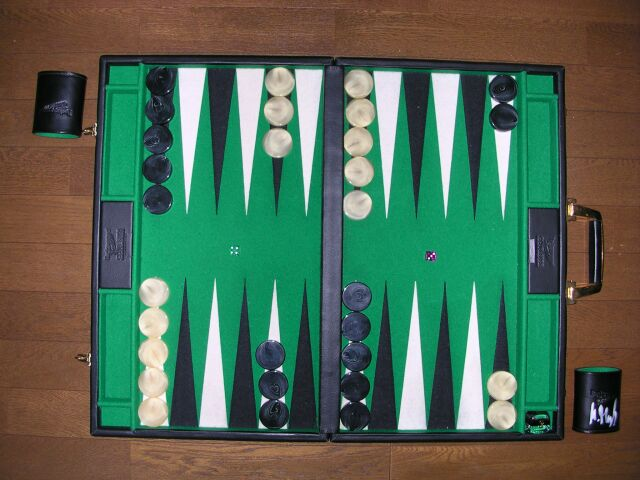

バックギャモンは「西洋双六」とか「盤双六」といわれるボードゲームです。ダイスを振って出た目だけ駒を進めていき、先にすべての駒をゴールさせたら勝ちというルールです。その歴史は大変古く、古代メソポタミアとも古代エジプトとも言われ、日本では日本書紀に最初の記録があります。かつて、碁盤、将棋盤並びに雙六盤の３つを総称して「三面」と呼び日本でも広く流行しました。
バックギャモンは、ダイスを使ってゲームをするため、当然運の要素が入っています。ダイスの目がものすごく良ければ、初心者が世界チャンピオンに勝つこともありえます。しかし、運だけで勝負が決まるわけではなく、実に高度な戦略を秘めた奥の深いゲームです。実力だけで勝負が決まるゲームは、初心者は楽しめません。運だけで勝負が決まるゲームは、あきてくるものです。実力だけでも運だけでも勝負が決まらない、両者の絶妙なバランスを持ったバックギャモンは、初心者から世界チャンピオンまで、レベルに応じて十分に楽しむことができるゲームです。
より詳しくは、まずは JBS (日本バックギャモン協会) のページ を訪問してみてください。 バックギャモンのルールをはじめ、全国のギャモンを遊べる場所や、スキルアップの方法などがまとめられています。
参考までに、バックギャモンで使われる道具の写真です。
